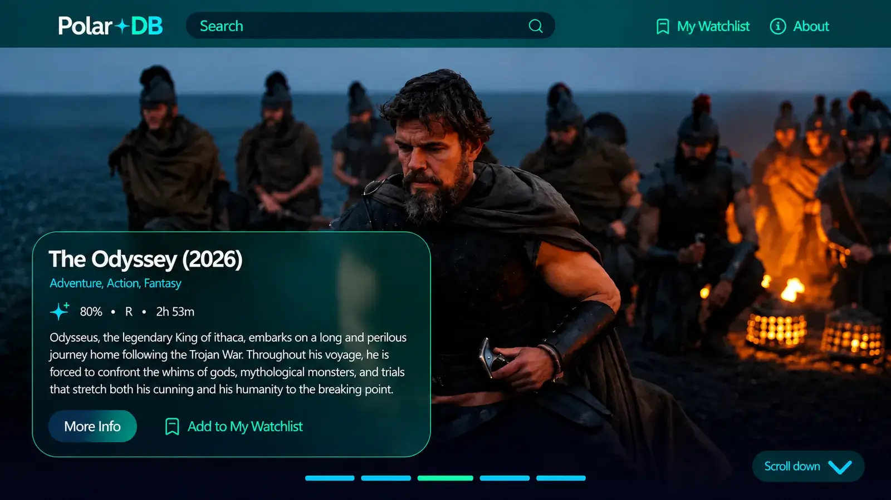

Polar+DB
React Application & Team Development
A movie discovery application built with React, featuring API-powered movie information, cast details, trailers, and a personalized watchlist.

Project Overview.
Polar+DB is a movie and television discovery application developed as a collaborative project during the Front-End Web Development program at BCIT.
Built with React and the TMDB API, the application allows users to explore movies, view detailed information, discover cast members, watch trailers, and save titles to a personalized watchlist.
My Role.
Working alongside my teammates, I developed the Watchlist page, including the display of saved movies and an empty state for users who had not added any titles. I worked with localStorage to preserve watchlist selections between visits.
I also worked on the ArtistCard and ArtistCarousel components, creating responsive cast displays and helping integrate artist information into the MovieDetail page. Throughout the project, I collaborated using Git and GitHub.
What I Learned.
Polar+DB gave me practical experience building reusable React components, working with API data, and managing application features such as a persistent watchlist.
I also gained valuable experience working in a shared codebase, using Git branches, integrating components, and troubleshooting responsive layouts as part of a development team.
Explore More Projects.
Take a look at the other websites and applications I've worked on.